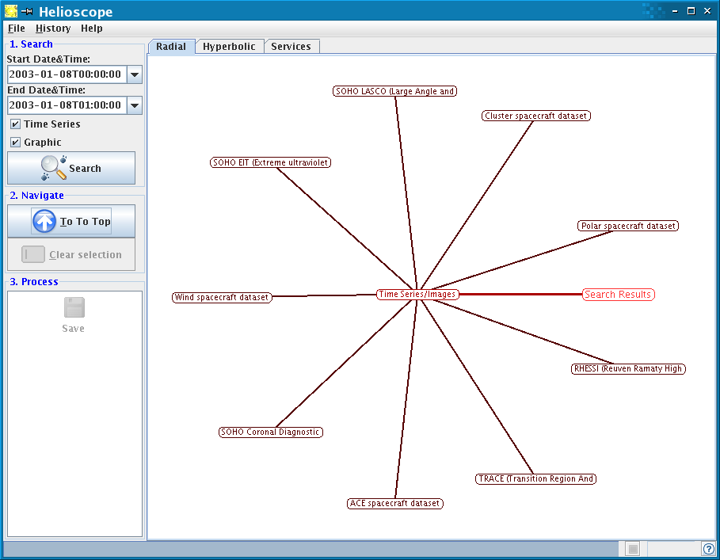
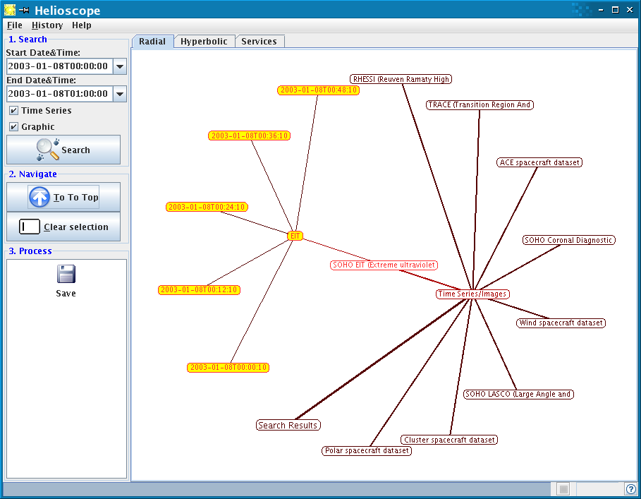

HelioScope
Summary
HelioScope allows you to locate, visualise and download Heliospheric data for a specified time range.
Background
HelioScope is an AstroGrid tool that queries Heliospheric datasets for data in the time range specified by the user. It is the Solar System equivalent of the AstroScope tool developed for night time Astronomy datasets.
Using HelioScope
Datasets available
In its initial release, HelioScope queries the Virtual Solar Observatory (VSO) and the NASA CDAW service. Extension to more datasets is planned.
Searching for data
You can specify a start and end time for your HelioScope search either by typing into the boxes (times must be in the format 2005-07-31T01:00:00) or by clicking on the drop-down icon next to the times and using the Calendar interface (click on a day in the Calendar to select it, double-click on the hour or minute or second, then use the arrows to change the times).
Click on Search to start the search. As data centers reply to the HelioScope request, new nodes are added to the display window.
To visualise files returned from the search for a given dataset, single-click on the node showing the dataset name. Child nodes display instrument information. Each final node, displaying a time string, represents a single data file. The time displayed in this node is the start time of the data in the file.
To go back to the initial view of the HelioScope results, click on Go to Top.
Moving the mouse over a bubble displays additional information on the dataset or data file.
There are 3 possible way to visualise the results: the Radial view (default), the Hyperbolic view, and the Services view. Click on the correspondong tab to select a view. The Services view shows which datasets have been queried and how many files were found for each service.

Selecting and downloading files
To select files for download, double-click on nodes. To select a single data file, double-click on the corresponding node. The file will be highlighted in yellow. Continue to double-click to add more files. If you double-click on a dataset name, all the child nodes (i.e. files) for that dataset are selected. If you double-click on Search Results all the files are selected (use with caution!).
To save the selected files, click on the Save icon. Here you will be prompted for your AstroGrid login name and password. Once you are logged in, you can specify where you want to save the files. This may be either a directory on your local machine, or a location in MySpace. In the new window that opens, click on the directory name, and hit Enter, then click on Save: the files will be saved.
To deselect a file, double-click on the corresponding node. To clear the entire selection click on Clear Selection.

Author: Silvia Dalla, s.dalla@manchester.ac.uk
Last revised : 28 March 2006